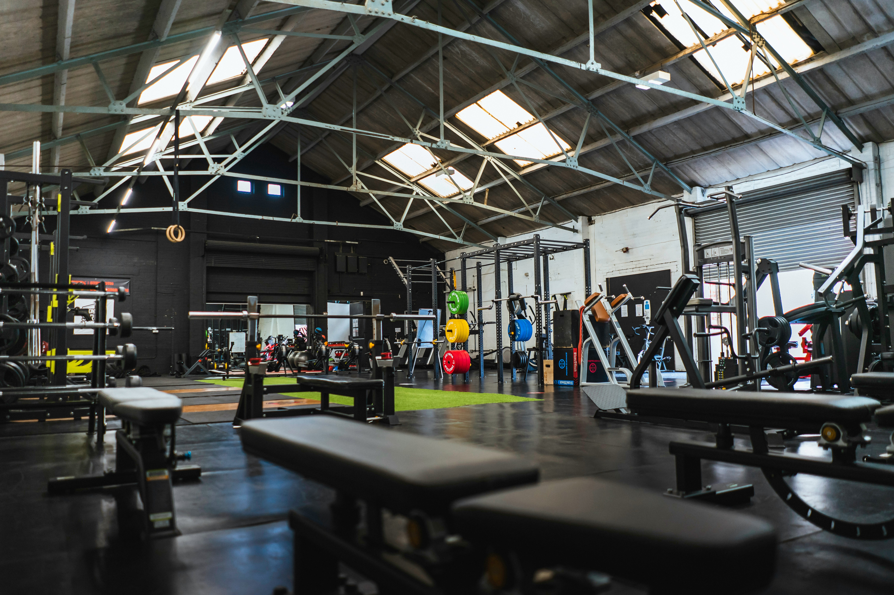

Push Day (Chest, Shoulders, Triceps)
Covers my pressing and fly variations, overhead shoulder work, lateral raises, tricep movements, and face pulls for shoulder health.
A straightforward guide to my push, pull, legs split, daily nutrition, and supplementation

Covers my pressing and fly variations, overhead shoulder work, lateral raises, tricep movements, and face pulls for shoulder health.
Breaks down vertical and horizontal back pulling, trap shrugs, bicep curl variations, and direct wrist curls for forearm and grip strength.
Details my lower body exercise order starting with hamstring and quad isolation before heavy pressing, plus weighted ab work at the end.
Explains how I approach daily protein, carbs, fats, fiber, hydration, and sleep alongside the four core supplements I take every day.